WindowsMobileでGPS地図を使う : GPSの設定
Home > Software > ソフトウエア開発・サーバ管理のメモ帳 > このページ
Last Update 2007/02/25
| デバイスの基本設定 デスクトップの設定 ネットワークの設定 GPSの設定 SiRF GPSモジュールの設定 地図の作成 |
この文章の大部分の設定内容は、mitac社のMio168での設定例を示している。機種固有のパラメータ（ポート番号等）を少しいじれば、他のWindows Mobile 5,6マシンでも流用出来る。（HP iPAQ112でも確認済み）
設定シート
プログラム中でGPSレシーバの接続方法を入力する場合に指定する設定値。（mio168の場合）
- GPSレシーバ ： SiRF II e/LP
- 接続ポート ： COM 2
- リンク速度 ： 4800 bps
VisualGPSce
VisualGPSceを用いて、NAVSTAR衛星からの電波の受信状況を把握できる。現在地や移動ベクトルも数値形式ではあるが把握できる。NMEAログを書き出す機能も持っている。
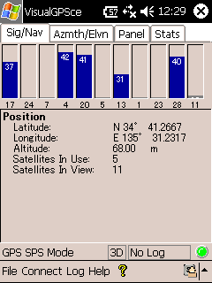
衛星番号と電波受信強度グラフ
現在位置（緯度、経度、高度）、捕捉衛星数
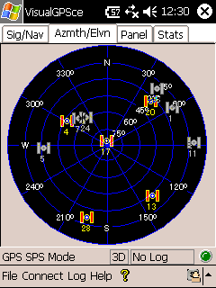
NAVSTAR衛星の見える位置
（仰角15°毎のサークルは指標）
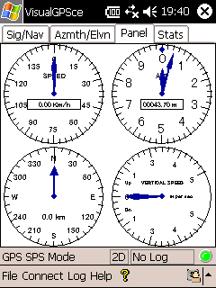
速度（水平） ・ 高度
方位 ・ 速度（垂直）
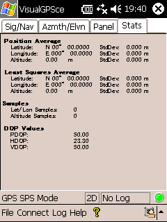
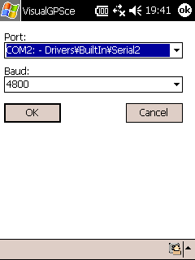
設定 （Connectメニューの中にある）
COM 2, 4800 bps に設定する
NMEAモニタ
NMEA Monitor CEは、上のVisualGPSCEと同じようなソフト。こちらは1画面で全てが確認できるコンパクト設計
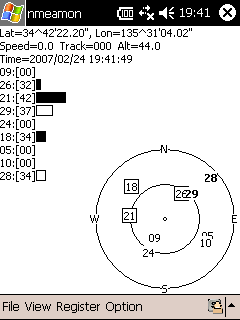
メイン画面
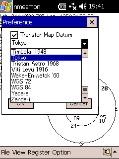
測地系の変換設定
WGS84（NMEAデータ） → 変換先
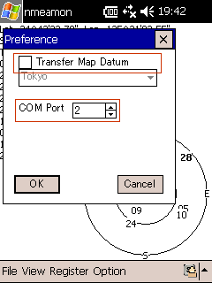
通信ポート番号のみ設定できる
COM 2 に設定する
loxtrax
loxtrax
というソフト。地図の用意できていないところで、迷路のような都市に迷い込むときに役立ちそうなソフトです。
画面の表示範囲は100m, 1km, 5km, ... 100km と調整可能。GPSから得られた数値データを表示しつつ、移動軌跡や進行方向を表示できます。速度やDOPもグラフで表示できます。
シェアウエアの登録をすれば、背景に地図画像などを表示させることも出来るようです。（フリー版では、30分で地図画面が消去されると書かれている）
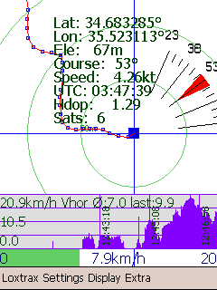
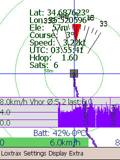
GarmapCE
日常の現在位置を知る作業や、NMEAログ取りは GarmapCE で行っている。WGS84測地系の地図さえ用意すれば、世界中のどこででも使えると思われる。
■ 地図の作成
■ 基本設定
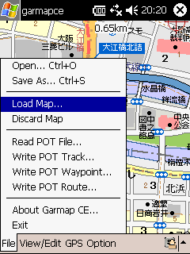
File － Load Map ...
地図ファイル（ビットマップ地図）を開く
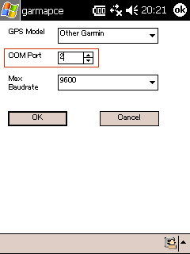
Option － GPS ...
GPSレシーバの設定。COM 2, 9600 bps
（4800bpsが無いため、9600bpsとしている）
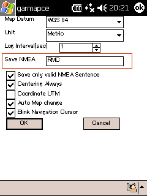
Option － Preference ...
WGS84座標系、Metricに設定
Save NMEA：保存時に対象とするNMEAデータの種類をセミコロンで区切って指定する（※１）
Log Interval：NMEAデータを受けている場合は、この値は無視される。
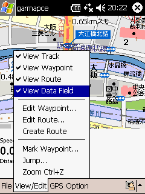
View － View data Fieldにチェック
GPSオンライン時に画面下部にデータ表示
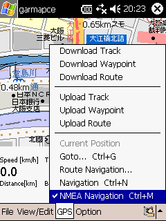
設定が終われば、ナビゲーション開始
COM 2のリンク速度設定が9600bps未満が無いため、9600bpsで利用している。今のところ問題なし。GPS Model の設定は、Other Garmin
としている。Garmin社のGPSでなくても、NMEAを吐き出すGPSなら対応可能なようです。
※１：NMEA保存時に対象とするデータの種類を設定する （Save MNEA）
例：GGA;GLL;GSA;RMC → 時刻・緯度・経度・高度；緯度・経度；衛星番号・DOP；進行方向・速度
メッセージの種類については、「SiRF GPSモジュールの設定」を参照。
■ ロードテスト
世界各国で行ったロード・テスト時のキャプチャ画像。航空機・高速鉄道・在来鉄道・バスの車内でも窓際の席に座ることで衛星からのシグナルを受信できて位置決定が出来た。
インターネット地図サイトから切り出して作った手製のGPS地図も結構使えるものだ。大きな移動を把握するだけなら、全く問題なし。
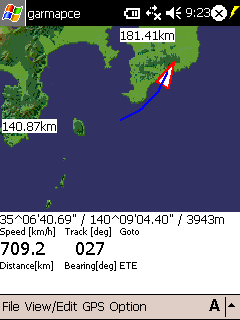
房総半島上空を飛ぶ航空機
（地図はGTOPO30）
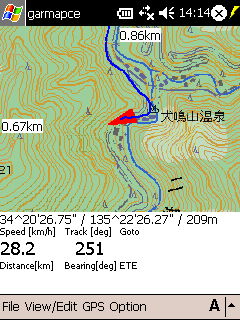
大阪の泉佐野を自動車で移動中
（地図は国土地理院1/25000）
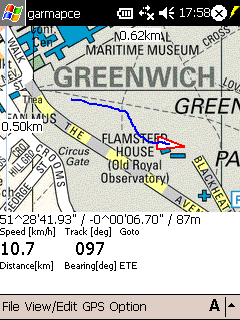
イギリスのグリニッジ （子午線付近）
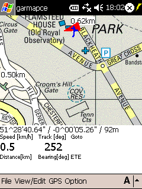
イギリスのグリニッジ （子午線のモニュメント上）
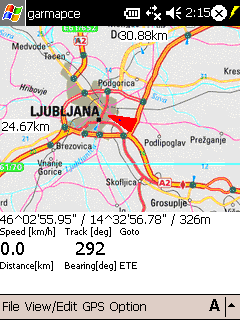
スロベニアの首都リュブリャーナ郊外
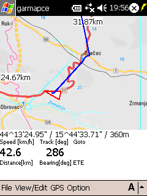
クロアチア、プリトビチェからザダールへのバス
途中で電源を切っているため、位置がジャンプ
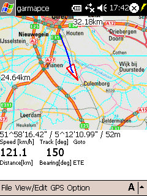
オランダのユトレヒト郊外を走る鉄道
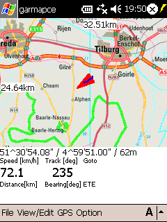
オランダのティルブルフ郊外を走るバス
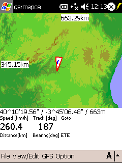
スペインのマドリッド発コルドバ行きAVE
（地図はGTOPO30）